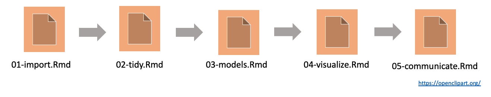
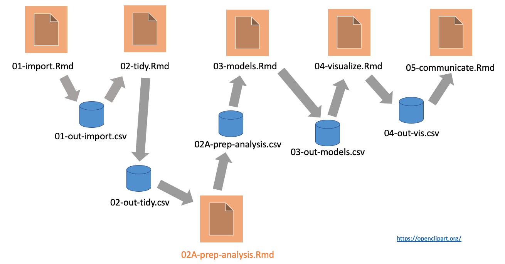

# R/functions.R file:
get_data <- function(file) {
read_csv(file, col_types = cols()) %>%
filter(!is.na(Ozone))
}
fit_model <- function(data) {
lm(Ozone ~ Temp, data) %>%
coefficients()
}
plot_model <- function(model, data) {
ggplot(data) +
geom_point(aes(x = Temp, y = Ozone)) +
geom_abline(intercept = model[1], slope = model[2]) +
theme_gray(24)
}
Introduction to the targets R package
Will Landau
Demanding computation in R
- Bayesian data analysis: JAGS, Stan, NIMBLE,
greta - Deep learning:
keras,tensorflow,torch - Machine learning:
tidymodels - PK/PD:
nlmixr,mrgsolve - Clinical trial simulation:
rpact,Mediana - Statistical genomics
- Social network analysis
- Permutation tests
- Database queries:
DBI - Big data ETL
Typical notebook-based project
The complicated reality
Pipeline tools

- Orchestrate moving parts.
- Scale the computation.
- Manage output data.
targets
- Designed for R.
- Encourages good programming habits.
- Automatic dependency detection.
- Behind-the-scenes data management.
- Distributed computing.
Resources
- Get started in four minutes: https://vimeo.com/700982360
- Example project: https://github.com/wlandau/targets-four-minutes
- Documentation website: https://docs.ropensci.org/targets/
- User manual: https://books.ropensci.org/targets/

Get started
- Write functions.
- Produce datasets, analyze datasets, and summarize analyses.
- Return clean exportable R objects (can be saved in one R process and read in another).
- Minimize side effects.
- R scripts in an
R/folder of the project.
- Call
use_targets()to generate code files fortargets. - Edit
_targets.Rby hand to define the pipeline.- Start small first if your full project is large or computationally demanding.
- Use
tar_manifest()andtar_visnetwork()to inspect the pipeline. - Use
tar_make()to run the pipeline. - Inspect the results with
tar_read()ortar_load(). 7 Scale up the pipeline if you started small.
R functions
use_targets()
- Files before
use_targets():
- Files after
use_targets():
_targets.R default content (1/2)
# Load packages required to define the pipeline:
library(targets)
# library(tarchetypes) # Load other packages as needed. # nolint
# Set target options:
tar_option_set(
packages = c("tibble"), # packages that your targets need to run
format = "rds" # default storage format
# Set other options as needed.
)
# tar_make_clustermq() configuration (okay to leave alone):
options(clustermq.scheduler = "multicore")
# tar_make_future() configuration (okay to leave alone):
future::plan(future.callr::callr)_targets.R default content (2/2)
# Run the R scripts in the R/ folder with your custom functions:
tar_source()
# source("other_functions.R") # Source other scripts as needed.
# Replace the target list below with your own:
list(
tar_target(
name = data,
command = tibble(x = rnorm(100), y = rnorm(100))
# format = "feather" # efficient storage of large data frames
),
tar_target(
name = model,
command = coefficients(lm(y ~ x, data = data))
)
)Modify _targets.R by hand.
# _targets.R file, written by use_targets() and then modified:
library(targets)
tar_option_set(packages = c("dplyr", "ggplot2", "readr"))
options(clustermq.scheduler = "multicore")
tar_source()
list(
tar_target(name = file, command = "data.csv", format = "file"),
tar_target(name = data, command = get_data(file)),
tar_target(name = model, command = fit_model(data)),
tar_target(name = plot, command = plot_model(model, data))
)Manifest
Dependency graph
tar_mermaid()(below),tar_visnetwork(), ortar_glimpse().
graph LR
subgraph legend
x0a52b03877696646([""Outdated""]):::outdated --- xbf4603d6c2c2ad6b([""Stem""]):::none
xbf4603d6c2c2ad6b([""Stem""]):::none --- xf0bce276fe2b9d3e>""Function""]:::none
end
subgraph Graph
xb7119b48552d1da3(["data"]):::outdated --> xaf95534ce5e3f59e(["plot"]):::outdated
xe1eeca7af8e0b529(["model"]):::outdated --> xaf95534ce5e3f59e(["plot"]):::outdated
x619ade380bedf7c2>"plot_model"]:::outdated --> xaf95534ce5e3f59e(["plot"]):::outdated
x6d51284275156668(["file"]):::outdated --> xb7119b48552d1da3(["data"]):::outdated
xd69ee82cddb4d6bb>"get_data"]:::outdated --> xb7119b48552d1da3(["data"]):::outdated
xb7119b48552d1da3(["data"]):::outdated --> xe1eeca7af8e0b529(["model"]):::outdated
x9c2a6d6bf64731cc>"fit_model"]:::outdated --> xe1eeca7af8e0b529(["model"]):::outdated
end
classDef outdated stroke:#000000,color:#000000,fill:#78B7C5;
classDef none stroke:#000000,color:#000000,fill:#94a4ac;
linkStyle 0 stroke-width:0px;
linkStyle 1 stroke-width:0px;
Run the pipeline
Data store

Everything is up to date.
graph LR
subgraph legend
x7420bd9270f8d27d([""Up to date""]):::uptodate --- xbf4603d6c2c2ad6b([""Stem""]):::none
xbf4603d6c2c2ad6b([""Stem""]):::none --- xf0bce276fe2b9d3e>""Function""]:::none
end
subgraph Graph
xb7119b48552d1da3(["data"]):::uptodate --> xaf95534ce5e3f59e(["plot"]):::uptodate
xe1eeca7af8e0b529(["model"]):::uptodate --> xaf95534ce5e3f59e(["plot"]):::uptodate
x619ade380bedf7c2>"plot_model"]:::uptodate --> xaf95534ce5e3f59e(["plot"]):::uptodate
x6d51284275156668(["file"]):::uptodate --> xb7119b48552d1da3(["data"]):::uptodate
xd69ee82cddb4d6bb>"get_data"]:::uptodate --> xb7119b48552d1da3(["data"]):::uptodate
xb7119b48552d1da3(["data"]):::uptodate --> xe1eeca7af8e0b529(["model"]):::uptodate
x9c2a6d6bf64731cc>"fit_model"]:::uptodate --> xe1eeca7af8e0b529(["model"]):::uptodate
end
classDef uptodate stroke:#000000,color:#ffffff,fill:#354823;
classDef none stroke:#000000,color:#000000,fill:#94a4ac;
linkStyle 0 stroke-width:0px;
linkStyle 1 stroke-width:0px;
Change a function
# R/functions.R:
get_data <- function(file) {
read_csv(file, col_types = cols()) %>%
filter(!is.na(Ozone))
}
fit_model <- function(data) {
lm(Ozone ~ Temp, data) %>%
coefficients()
}
plot_model <- function(model, data) {
ggplot(data) +
geom_point(aes(x = Temp, y = Ozone)) +
geom_abline(intercept = model[1], slope = model[2]) +
theme_gray(24) +
ggtitle("Ozone vs Temp")
}Refresh the pipeline.

graph LR
subgraph legend
x7420bd9270f8d27d([""Up to date""]):::uptodate --- x0a52b03877696646([""Outdated""]):::outdated
x0a52b03877696646([""Outdated""]):::outdated --- xbf4603d6c2c2ad6b([""Stem""]):::none
xbf4603d6c2c2ad6b([""Stem""]):::none --- xf0bce276fe2b9d3e>""Function""]:::none
end
subgraph Graph
xe1eeca7af8e0b529(["model"]):::uptodate --> xe345e05e168a80f1(["summary"]):::uptodate
xb7119b48552d1da3(["data"]):::uptodate --> xaf95534ce5e3f59e(["plot"]):::outdated
xe1eeca7af8e0b529(["model"]):::uptodate --> xaf95534ce5e3f59e(["plot"]):::outdated
x619ade380bedf7c2>"plot_model"]:::outdated --> xaf95534ce5e3f59e(["plot"]):::outdated
x6d51284275156668(["file"]):::uptodate --> xb7119b48552d1da3(["data"]):::uptodate
xd69ee82cddb4d6bb>"get_data"]:::uptodate --> xb7119b48552d1da3(["data"]):::uptodate
xb7119b48552d1da3(["data"]):::uptodate --> xe1eeca7af8e0b529(["model"]):::uptodate
x9c2a6d6bf64731cc>"fit_model"]:::uptodate --> xe1eeca7af8e0b529(["model"]):::uptodate
end
classDef uptodate stroke:#000000,color:#ffffff,fill:#354823;
classDef outdated stroke:#000000,color:#000000,fill:#78B7C5;
classDef none stroke:#000000,color:#000000,fill:#94a4ac;
linkStyle 0 stroke-width:0px;
linkStyle 1 stroke-width:0px;
linkStyle 2 stroke-width:0px;
Parallel computing (1/2)
- Call
use_targets()to automatically configuretargetsfor your system.- Writes
_targets.R,clustermq.tmpl, andfuture.tmplfor a cluster if you have one (Slurm, SGE, PBS, TORQUE, or LSF). - Otherwise,
use_targets()configures_targets.Rto use local multi-process computing.
- Writes
- Performance:
tar_option_set()and other choices:memory:"transient"or"persistent"storage:"main"or"worker"retrieval:"main"or"worker"deployment:"main"or"worker"- Choose a branching/batching for optimal scale if needed.
- Choose a folder for the project and data store where the file system is fast.
Parallel computing (2/2)
- Run the pipeline for a desired
nmaximum workers:tar_make_clustermq(workers = n)for persistent workers.tar_make_future(workers = n)for transient workers.
- Trust the package to orchestrate the targets.
model1andmodel2run in parallel afterdatafinishes.summary1runs aftermodel1is done.summary2runs aftermodel2is done.summary1andsummary2can run in parallel.resultswaits for bothsummary1andsummary2.
graph LR
subgraph Graph
xb7119b48552d1da3(["data"]):::outdated --> xd2415809dfccb1c9(["model1"]):::outdated
xb7119b48552d1da3(["data"]):::outdated --> x5e90f77e4394a7c0(["model2"]):::outdated
xe7486797ee90ffad(["summary1"]):::outdated --> x26a6b9ffae1b7593(["results"]):::outdated
x7af94b1ab69cf0e7(["summary2"]):::outdated --> x26a6b9ffae1b7593(["results"]):::outdated
xd2415809dfccb1c9(["model1"]):::outdated --> xe7486797ee90ffad(["summary1"]):::outdated
x5e90f77e4394a7c0(["model2"]):::outdated --> x7af94b1ab69cf0e7(["summary2"]):::outdated
end
classDef outdated stroke:#000000,color:#000000,fill:#78B7C5;
classDef none stroke:#000000,color:#000000,fill:#94a4ac;
Literate programming
tar_quarto()ortar_render()from thetarchetypespackage.- Render a Quarto document/project or R Markdown document as a target in the pipeline.
- Documents rely on upstream targets through
tar_read()andtar_load().tar_quarto()andtar_render()register upstream targets as dependencies.- The documents themselves should run quickly and do little to no original computation.
- Multiple ways to render the report:
- Option 1: develop it interactively (RStudio IDE,
rmarkdown::render(),quarto::quarto_render(). - Option 2: run the pipeline (e.g.
tar_make()) to get reproducible HTML output.
- Option 1: develop it interactively (RStudio IDE,
Example report.qmd
In a pipeline
# _targets.R file, written by use_targets() and then modified:
library(targets)
tar_option_set(packages = c("dplyr", "ggplot2", "readr"))
options(clustermq.scheduler = "multicore")
tar_source()
list(
tar_target(name = file, command = "data.csv", format = "file"),
tar_target(name = data, command = get_data(file)),
tar_target(name = model, command = fit_model(data)),
tar_target(name = plot, command = plot_model(model, data)),
tarchetypes::tar_quarto(name = report, path = "report.qmd")
)
graph LR
subgraph legend
x7420bd9270f8d27d([""Up to date""]):::uptodate --- x0a52b03877696646([""Outdated""]):::outdated
x0a52b03877696646([""Outdated""]):::outdated --- xbf4603d6c2c2ad6b([""Stem""]):::none
xbf4603d6c2c2ad6b([""Stem""]):::none --- xf0bce276fe2b9d3e>""Function""]:::none
end
subgraph Graph
xe1eeca7af8e0b529(["model"]):::uptodate --> xe0fba61fbc506510(["report"]):::outdated
xaf95534ce5e3f59e(["plot"]):::uptodate --> xe0fba61fbc506510(["report"]):::outdated
xb7119b48552d1da3(["data"]):::uptodate --> xaf95534ce5e3f59e(["plot"]):::uptodate
xe1eeca7af8e0b529(["model"]):::uptodate --> xaf95534ce5e3f59e(["plot"]):::uptodate
x619ade380bedf7c2>"plot_model"]:::uptodate --> xaf95534ce5e3f59e(["plot"]):::uptodate
x6d51284275156668(["file"]):::uptodate --> xb7119b48552d1da3(["data"]):::uptodate
xd69ee82cddb4d6bb>"get_data"]:::uptodate --> xb7119b48552d1da3(["data"]):::uptodate
xb7119b48552d1da3(["data"]):::uptodate --> xe1eeca7af8e0b529(["model"]):::uptodate
x9c2a6d6bf64731cc>"fit_model"]:::uptodate --> xe1eeca7af8e0b529(["model"]):::uptodate
end
classDef uptodate stroke:#000000,color:#ffffff,fill:#354823;
classDef outdated stroke:#000000,color:#000000,fill:#78B7C5;
classDef none stroke:#000000,color:#000000,fill:#94a4ac;
linkStyle 0 stroke-width:0px;
linkStyle 1 stroke-width:0px;
linkStyle 2 stroke-width:0px;
Reproducible HTML report

Static branching
# _targets.R file, written by use_targets() and then modified:
library(targets)
options(clustermq.scheduler = "multicore")
tar_source()
list(
tar_target(name = file, command = "data.csv", format = "file"),
tar_target(name = data, command = get_data(file)),
tarchetypes::tar_map(
tar_target(name = analysis, command = method(data, tag)),
values = tibble::tibble(
method = rlang::syms(c("run_keras", "run_xgboost")),
tag = c("tag1", "tag2")
)
)
)
graph LR
subgraph Graph
xb7119b48552d1da3(["data"]):::outdated --> xc74e60078fdc9490(["analysis_xgboost_tag2"]):::outdated
xb7119b48552d1da3(["data"]):::outdated --> x142d7a4d7e9c35b0(["analysis_keras_tag1"]):::outdated
end
classDef outdated stroke:#000000,color:#000000,fill:#78B7C5;
classDef none stroke:#000000,color:#000000,fill:#94a4ac;
- See also
tar_combine()fromtarchetypes.
Dynamic branching
- Can branch over vector elements, list elements, or rows of a data frame.
- Can be combined with static branching (e.g.
tar_map_rep()). - See
tar_group_count()and friends for dynamic branching overdplyrrow groups.
graph LR
subgraph Graph
x04e94ee208381956(["index"]):::uptodate --> x40ad95db433ebf41["result"]:::uptodate
end
classDef uptodate stroke:#000000,color:#ffffff,fill:#354823;
classDef none stroke:#000000,color:#000000,fill:#94a4ac;
Extending targets

Target factories
- A target factory is a reusable function that creates target objects.
- Usually requires metaprogramming: http://adv-r.had.co.nz/Computing-on-the-language.html#substitute
#' @title Example target factory in an R package.
#' @export
#' @description A target factory to analyze data.
#' @return A list of 3 target objects to:
#' 1. Track the file for changes,
#' 2. Read the data in the file, and
#' 3. Analyze the data.
#' @param File Character of length 1, path to the file.
target_factory <- function(file) {
list(
tar_target_raw("file", file, format = "file", deployment = "main"),
tar_target_raw("data", quote(read_data(file)), format = "fst_tbl", deployment = "main"),
tar_target_raw("model", quote(run_model(data)), format = "qs")
)
}Target factories simplify pipelines.
Example: stantargets

About Stan
- Probabilistic programming language: https://www.jstatsoft.org/article/view/v076i01.
- Markov chain Monte Carlo (MCMC) with HMC and NUTS.
- Often more efficient than Gibbs sampling.
- Flexible specification of posterior distributions.
- Indifferent to conjugacy.
- Variational inference (ADVI)
- Penalized MLE (L-BFGS)
Target factories for Stan
- Closely follows the function interface of
cmdstanr: https://mc-stan.org/cmdstanr/reference/index.html.
| Algorithm | Single-rep multi-output | Multi-rep single-output |
|---|---|---|
| MCMC | tar_stan_mcmc() |
tar_stan_mcmc_rep_draws() tar_stan_mcmc_rep_diagnostics() tar_stan_mcmc_rep_summary() |
| Gen. Qty. | tar_stan_gq() |
tar_stan_gq_rep_draws() tar_stan_gq_rep_summary() |
| Variational | tar_stan_vb() |
tar_stan_vb_rep_draws() tar_stan_vb_rep_summary() |
| MLE | tar_stan_mle() |
tar_stan_mle_rep_draws() tar_stan_mle_rep_summary() |
| Compilation | tar_stan_compile() |
|
| Summaries | tar_stan_summary() |
tar_stan_mcmc()
- Run the model once.
- Create targets for MCMC draws, summaries, and HMC/NUTS diagnostics.
graph LR
subgraph Graph
x4cd7b5c3c125f548(["example_data"]):::outdated --> xecfe54c2d4fb279d(["example_summary_model"]):::outdated
x6cc8b8be867e1e0d(["example_mcmc_model"]):::outdated --> xecfe54c2d4fb279d(["example_summary_model"]):::outdated
x6cc8b8be867e1e0d(["example_mcmc_model"]):::outdated --> x54294c764991c41d(["example_diagnostics_model"]):::outdated
x6cc8b8be867e1e0d(["example_mcmc_model"]):::outdated --> xc4714540b066b032(["example_draws_model"]):::outdated
x4cd7b5c3c125f548(["example_data"]):::outdated --> x6cc8b8be867e1e0d(["example_mcmc_model"]):::outdated
x7959ddde0153f85d(["example_model_file"]):::outdated --> x6cc8b8be867e1e0d(["example_mcmc_model"]):::outdated
end
classDef outdated stroke:#000000,color:#000000,fill:#78B7C5;
classDef none stroke:#000000,color:#000000,fill:#94a4ac;
tar_stan_mcmc_rep_summary()
- Run the model multiple times in batches over many randomly-generated datasets.
- Only return posterior summaries.
graph LR
subgraph Graph
x4cd7b5c3c125f548["example_data"]:::outdated --> xbeea21a0642714d5["example_model"]:::outdated
xbeea21a0642714d5["example_model"]:::outdated --> xe6eda53558c41c5e(["example"]):::outdated
x7205eb8b5739d5b6(["example_file_model"]):::outdated --> x4cd7b5c3c125f548["example_data"]:::outdated
xa2d1919ce1427f12(["example_batch"]):::outdated --> x4cd7b5c3c125f548["example_data"]:::outdated
end
classDef outdated stroke:#000000,color:#000000,fill:#78B7C5;
classDef none stroke:#000000,color:#000000,fill:#94a4ac;
Thanks
- rOpenSci reviewed, adopted, and promoted
targetsand its ecosystem. - rOpenSci reviewers of
targetsandtarchetypes: Samantha Oliver, TJ Mahr. - Contributions from the community:
- Developers: https://github.com/ropensci/targets/graphs/contributors.
- Discussions: https://github.com/ropensci/targets/discussions
© 2022 Eli Lilly and Company